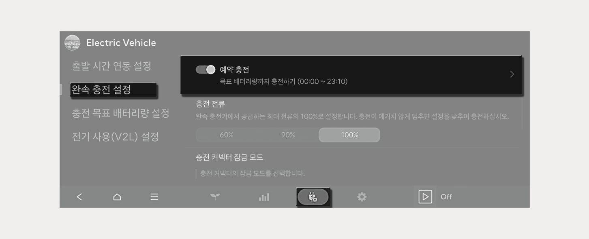
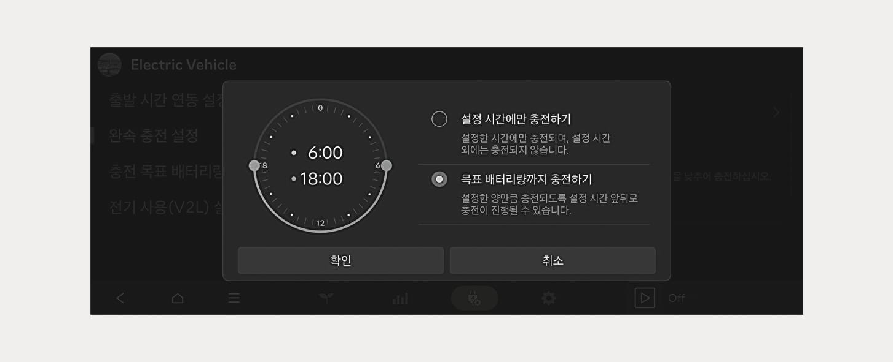
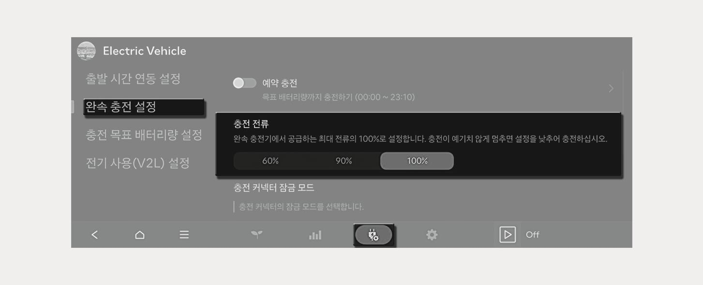

완속 충전 설정하기
인포테인먼트 시스템 홈 화면에서 Electric Vehicle >
예약 충전 설정하기
-
완속 충전 설정 화면에서 예약 충전을 눌러 기능을 켜십시오.
-
예약 충전 옵션 화면이 표시됩니다.

1C_ScheduledClharging
-
-
충전 옵션을 선택하십시오.
목표 배터리량 설정에 대한 자세한 설명은 '충전 목표 배터리량 설정하기'를 참고하십시오.
-
설정 시간에만 충전하기: 설정한 시간대에 충전을 진행합니다. 설정 시간대에만 충전이 진행되므로 목표 배터리량까지 충전되지 않을 수 있습니다.
-
목표 배터리량까지 충전하기: 설정한 목표 배터리량까지 충전을 진행합니다. 목표량까지 충전하기 위해 설정한 시간 외 시간대에도 충전이 진행될 수 있습니다.

1C_ScheduledClharging_2
-
충전 전류 설정하기
완속 충전 설정 화면에서 완속 충전기 사용 시의 충전 전류를 설정하십시오.

1C_ACChargingCurrent